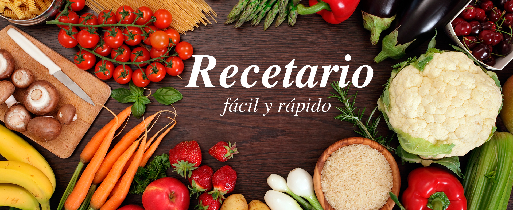
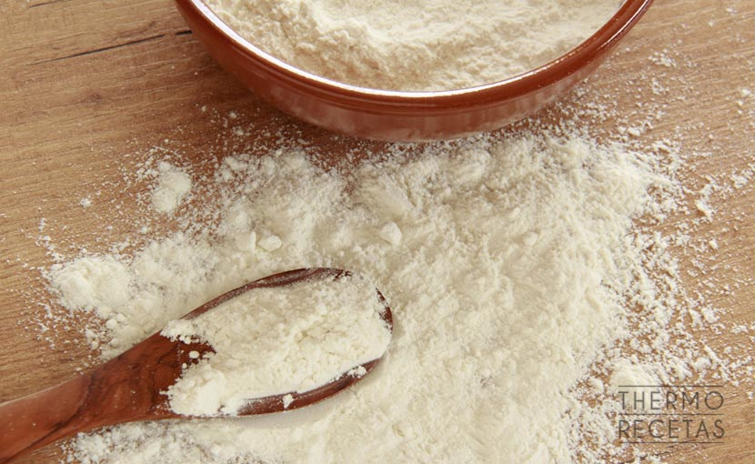
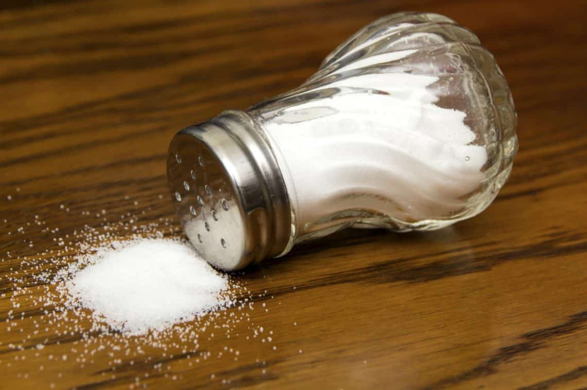
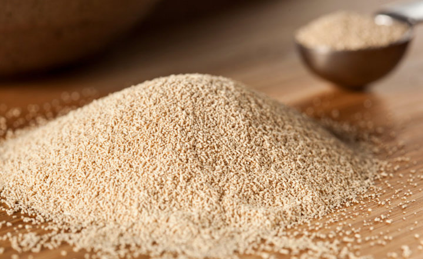
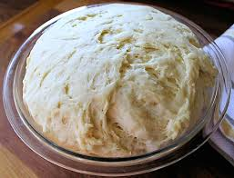
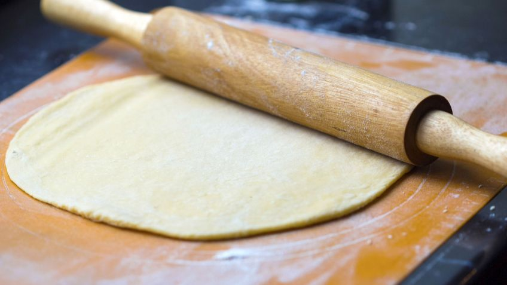
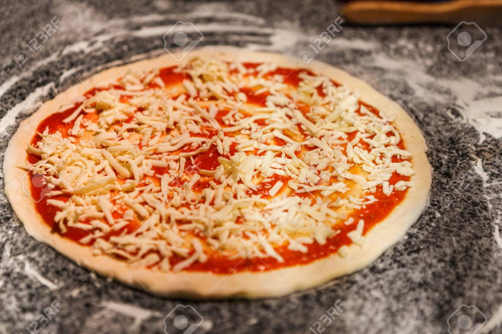

EL recetario

-Receta de pizza-
- 500g Harina
- 200g Agua
- 11g Levadura
- 5g Sal



Como hacer la masa
En un bol ponemos todos los ingredientes de la masa: harina, agua, levadura, aceite y sal y mezclamos bien con una cuchara. Una masa de pizza es como un pan sencillo. Se puede hacer con cualquier tipo de harina y la cantidad de agua será aproximadamente de la mitad de la de harina. Si usamos una harina con más cantidad de gluten (harina de fuerza) entonces necesitaremos algo más de agua y si utilizamos una harina normal con la mitad de agua (por harina) y un poco más será suficiente.
Acto seguido pasaremos a amasar. Si tenemos una amasadora estupendo porque no tendremos que hacer gran cosa. Si no tenemos lo unico que haremos será estirar la masa y recoger con la palma de la mano hasta conseguir una masa que no se pega a las manos ni a la mesa, es una masa fina y elástica. Entre 5 y 10 minutos serán más que suficientes. No hará falta enharinar la mesa.
Cogemos la masa y la desgasificamos, es decir la amasamos ligeramente para que vuelva a su volumen inicial. Podemos pasar a dividirla para hacer pizzas pequeñas o hacer una grande. Para estirarla sin complicaciones la estiramos con las manos como podamos o bien con un rodillo, la forma es lo de menos.Le pondremos los ingredientes, primero el tomate, después el queso y el resto de cosas que queramos añadir.
EL último paso es el del horno, y no es el menos importante. Con el horno precalentado a un mínimo de 230 ºC metemos la pizza.


